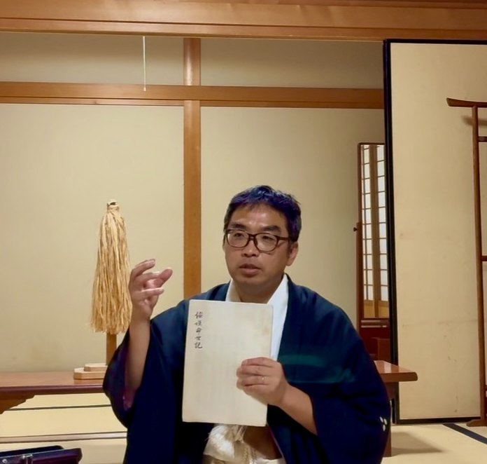
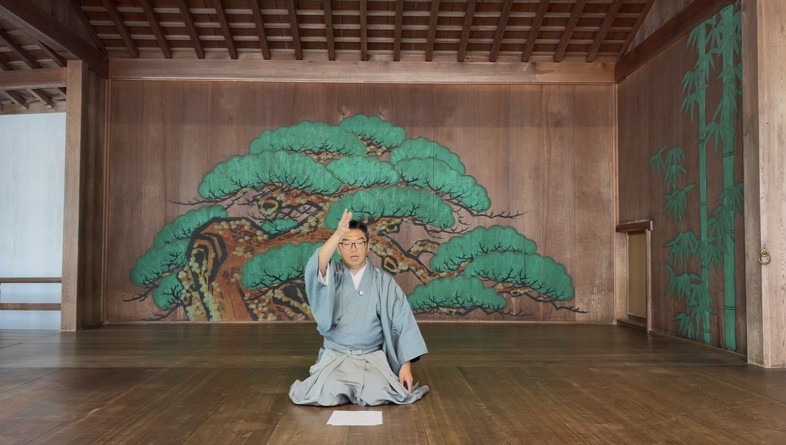

敗れた出雲族の血を引く者が、神武以前からの日本を貫く神祇の道を、
神宮を丑寅で守る、令和の岡崎で現代に継ぐ。
度會神道の学びと「和儀」を通じて、日本人の肚を再発見する場。

塾名は、伊勢外宮の神主・出口延佳（1615-1690）の著述に由来する。 延佳は弟子への日本書紀・神代記の講義の中でこう述べた。
中常とは、天御中主神（あまのみなかぬしのかみ）＝國常立尊の同躰異名。 天の中心にある北極星（北辰）のように、中心にして永遠、動かざる軸。 その道を「神道」と呼んだ延佳の言葉を、塾名とした。
また本書写本の解題タブに収録した倭姫命世記の30頁には、 まさに「心御柱」を建てる場面が記されている。 底津磐根に大宮柱を太敷き立て、天の中心軸＝中常の柱を建てる ── 塾名の根拠が典籍の中に実在する。
塾主・松浦茂樹の父方は、一本の系譜で出雲族・登美氏に遡る。
| 源流 | 出雲族・登美氏（とみうじ） 神武天皇に敗れた國津神の長・登美長髄彦と同族。 伊雜宮を造営した伊佐波登美神もこの系譜に連なる。 |
|---|---|
| 奥州安倍氏 | 登美氏の血を引き、北辰（北極星）を祀り、東北の王と称された一族。 前九年の役（1051-62）で安倍宗任が九州・松浦へ落ち延びる。 |
| 現姓・松浦氏 | 松浦の地で現地の松浦氏に合流。これが塾主の現姓。 |
倭姫命世記25頁には、懸税（かけちから）と御神酒の起源が記されている。 中常塾の二つの奉納事業は、この一段に典籍上の根拠を持つ。
御神酒は三部作として醸造・奉納されてきた：

中常塾は、度會神道の学びを核に据える。度会神道は伊勢外宮の度会氏が体系化した神道の流れ。 塾主は2008年に度会神道に出逢い、以来探究を続けてきた。
豐中常文庫が所蔵する倭姫命世記の書写本は、その度会神道の根本古典を、 出口延佳自身が校合した一冊。文庫の第一冊としてこの書を選んだのは必然である。
また、「和儀（わぎ）」は、代々続く狂言師の家に生まれ育った狂言師・ 茂山千三郎先生が開発されたもの。 能楽・狂言に伝えられてきた本来の日本人の立ち居振る舞いの身体技法を、 その稽古を通じて現代の日本人が取り戻すために生み出された。
塾主は「中常の道の体得への秘密は能楽・狂言にある」と考え、十数年前に能楽の門を叩いたことがあった。 その折、神宮の能舞台にて舞と謡を奉納する尊い縁に奇跡的に浴した。 以来、独学で探究を続けていたが、それから十年後、千三郎先生が和儀を開発。 塾主はその二年後に和儀と出会い、京都に通い千三郎先生から学んで、師範の資格を授かった。 中常塾では、和儀を中常の道習得の中核プログラムとして位置づけている。
豐中常文庫は、中常塾が蔵する度會神道の典籍を電子の形に写し、
広く現代の手に渡すために開いた文庫である。
第一冊は、塾主所蔵の『倭姫命世記』書写本（寛文九年・出口延佳校合）。
永年心に引っかかっていた違和感がすっと溶けて、目から鱗でした。 300年以上前に説いて下さっていたとは！ 開塾日に伺えて、光栄です。
古来、文化、根源を学び、軸を知り、力の源を解りやすく体験しました。 柔らかく教えて頂き、また体験出来た事、有難う御座いました。また参加させて頂きます。
私自身が永らく「誰とも共有できなかった大切な価値観」として心に秘めていた内容と同じことが書かれており、感動いたしました。 神道、自分自身を信じてまっすぐ生きればよいのだ、と肚落ちいたしました。
和儀に少し触れただけでも心身が整ったような気がします。 すり足の効果が早速出て、「そそそそっと歩いてきた」と言われました。 少しおしとやかに見えたようで、嬉しかったです。
日本文化に触れ、和儀、口伝。 伝える事の大切さ、伝える事の本質、日本人のしん、人としてのしん。 大変貴重な体験、また勉強になりました。有難うございます。
習った摺り足の姿勢をとって歩くと身体の深部が筋肉痛。 普段どれだけ中心の筋肉を使っていないか実感しました。
新緑の季節の中、能楽堂でのお稽古。場の空気に触れるだけでも、貴重なひとときでした。 美しい所作、美しい佇まい、身につけたいなとしみじみ感じました。
柔らかなお言葉で、体験の出来ない世界を解りやすく伝えて頂き有難う御座います。 また参加させて頂きます。
中常塾への参加・お申し込みは、以下よりどうぞ。
お申し込みはこちら ▸